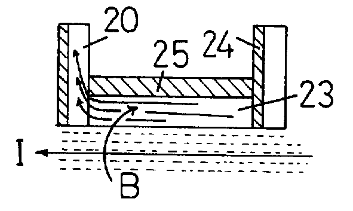

The following is a U.K. Patent granted to Harold Aspden on March 26th 1997 with a publication date of May 3 1994.
Abstract: In order to research the generation of heat by promoting the fusion of protons or deuterons adsorbed by a host metal, the apparatus provides a structural configuration by which the direction of heat flow through the metal is transverse to the direction of an applied magnetic field. Thermal priming means, which may include pre-cooling on the heat output side or electrical heating of the host metal, provide the initial temperature gradient triggering fusion. Alternating current activation of the magnetic field, the intensity of which may be enhanced by using nickel as the host metal, combined with a non-uniformuity of the magnetic field and/or heat flow through the metal, assure the abnormal presence of a residual negative electron poulation in the metal. Such charge nucleates the merger of positive charge and enhances the fusion process.
